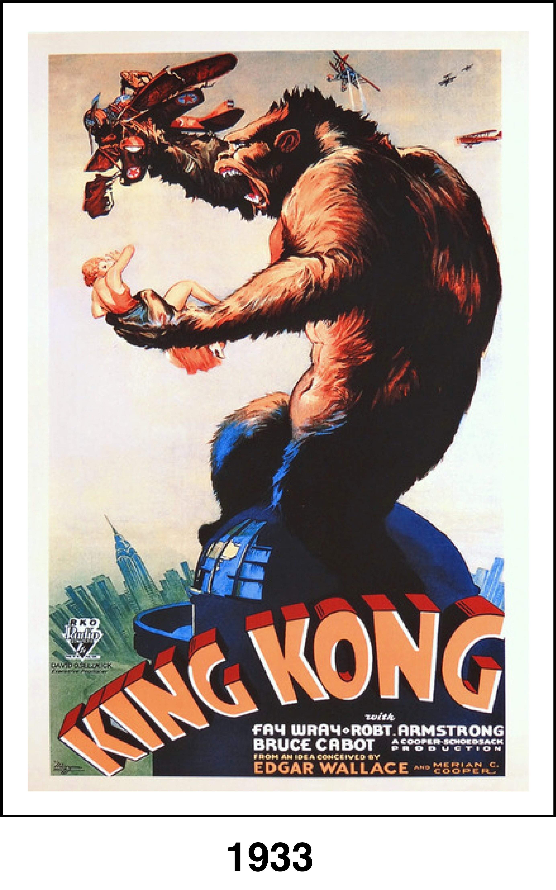
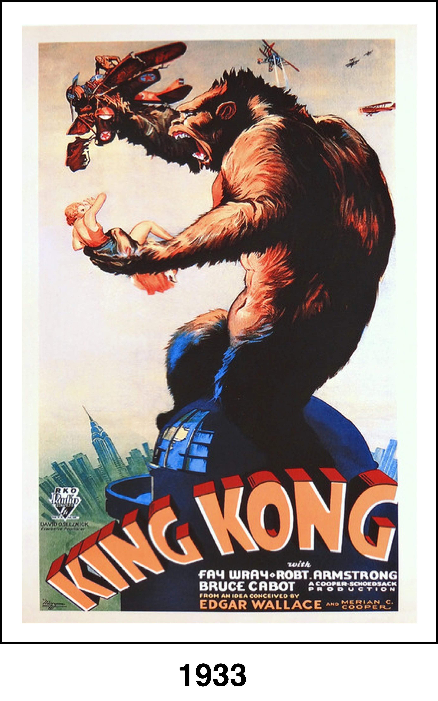

Actress Ann Darrow (Fay Wray) and director Carl Denham (Robert Armstrong) travel to the Indian Ocean to do location shoots for Denham's new jungle picture. Along the way, the actress meets and falls for rugged First Mate John Driscoll (Bruce Cabot). Upon arriving at a mysterious island, Ann is taken hostage by natives who prepare her as a sacrifice to the enormous ape Kong who rules over their jungle. But when Ann is rescued and Kong is captured, the real trouble begins.